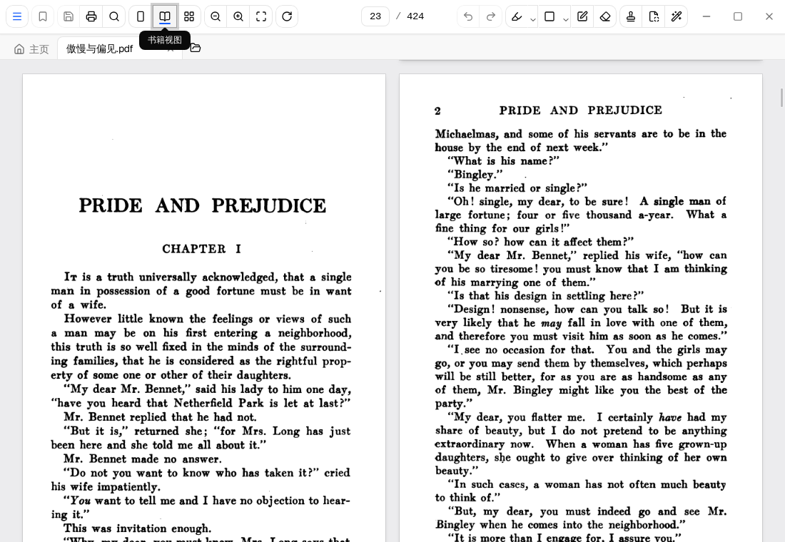
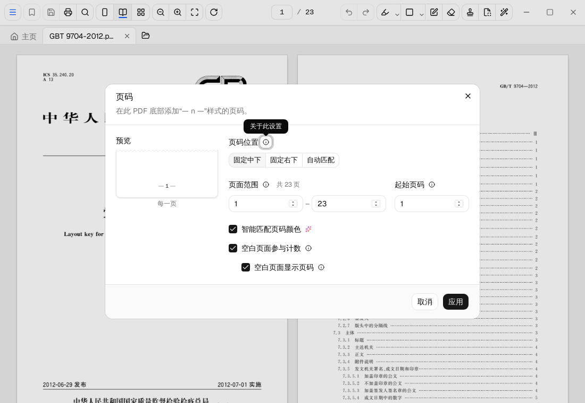
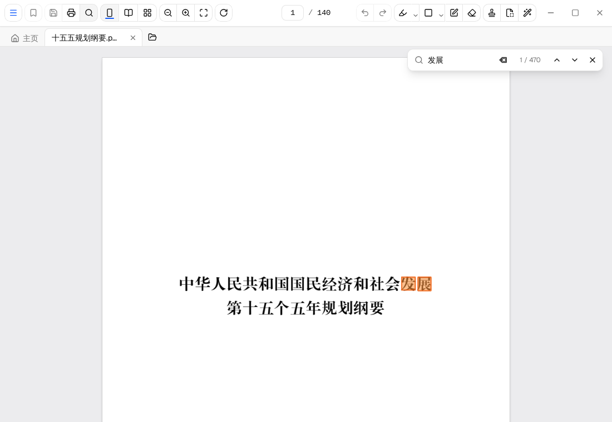
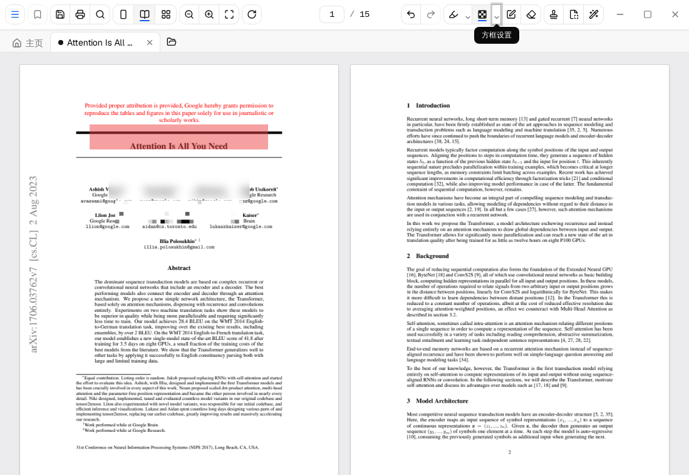
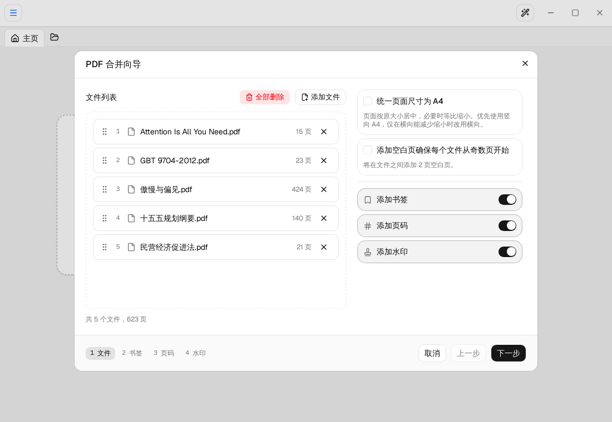
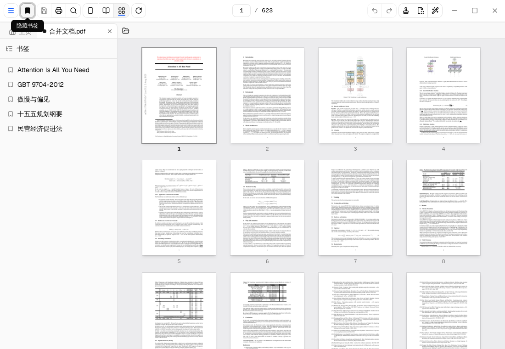

快而轻启动、翻页、安装包，三处都不拖沓 Fast and lightQuick to start, smooth to scroll, small to download
- 启动迅速Instant launch 点开即用，不必等进度条走完ready before any progress bar could finish
- 翻页如纸Paper-like paging 本地引擎渲染，滚动缩放都跟手native rendering keeps scrolling and zooming fluid
- 体积精简Compact 安装包只有几十 MB，不捆绑任何东西a few dozen MB, nothing bundled

整篇水印盖得快，也留得住 Whole-document watermarksStamped in one go, hard to peel off
输入一句话，整份文档每一页同时盖印，预览所见即所得。导出时选择把页面合成图片，水印便不再是能单独选中、一键删除的文字层——这份“盖了章”的版本，适合直接外发。 Type once and every page is stamped, exactly as the preview shows. Export with pages rasterized to images, and the watermark is no longer a text layer someone can select and delete — that stamped copy is safe to send on.

国标页码按 GB/T 9704 公文格式排版 Official-format page numbersthe “— n —” style of GB/T 9704
页码采用公文通用的 “— 1 —”样式。打开“自动匹配”，奇数页落右下、偶数页落左下，双面装订各归其位；空白页计不计号、印不印号，也都由你决定。 Numbers take the “— 1 —” form used in Chinese official documents. Auto-match mirrors them — odd pages bottom-right, even pages bottom-left — so double-sided binding lines up; whether blank pages count, or print at all, is your call.
跨行搜索换行不拆词，粘贴即可搜 Search that spans line breakspaste a paragraph, find it whole
全文检索只认 PDF 里的真实文字：正文里被排版折行的短语照样一击命中，带着换行粘进搜索框的整段话也能连起来匹配。140 页的纲要、200 多处结果，转眼就到。 Full-text search reads the PDF's real text: phrases wrapped mid-line still match in one hit, and a query pasted with its line breaks intact matches too. All 46 “attention” hits across the Transformer paper — results land in the blink of an eye.


遮盖方框半透明、高斯模糊、马赛克 Redaction boxestranslucent, Gaussian blur, mosaic
选中效果，在页面上拖一个框就位：半透明色块用于提醒，模糊与马赛克用于挡住敏感内容。配合图片化导出，PDF 底层的原文字层一并抹去，复制粘贴也取不回来。 Pick an effect and drag a box: translucent flags a spot, blur and mosaic hide sensitive content. Export rasterized and the underlying text layer goes with it — no copy-paste recovery.
合订成册PDF、图片、Word，来者不拒 Bound volumesPDFs, images, Word — all welcome
把材料按顺序拖进合并向导：PDF、图片、Word 文档（.doc / .docx）一律并入。可以插入空白页让每份材料从奇数页起，统一为 A4，再自动编页码、立书签——装订厂级别的整齐。 Drop materials into the merge wizard in order: PDFs, images, and Word documents (.doc / .docx) all join. Insert blank pages so each source starts on an odd leaf, normalize to A4, then add page numbers and bookmarks — bindery-grade tidiness.


书签与整览厚厚一册，也井井有条 Bookmarks at a glancesix hundred pages, still tidy
合订完成后每个源文件自动生成一条书签，侧栏即成目录；缩略图视图整册过目，随时拖动调序、插入空白页。成品可存为 PDF，或逐页导出 PNG 打包带走。 Every source becomes a bookmark, so the sidebar doubles as a table of contents; the thumbnail grid surveys the whole volume, and pages drag to reorder or slot in blanks. Save as PDF, or export page-by-page PNGs.
开源，欢迎光临 Open source, come say hi
TFolio 以 MIT 许可发布，代码托管在 GitHub。用得顺手，请赏一颗 Star；用着别扭，欢迎提个 issue——每一条反馈都会被认真读。 TFolio ships under the MIT license on GitHub. If it works for you, a Star helps others find it; if it doesn't, file an issue — every report gets read.